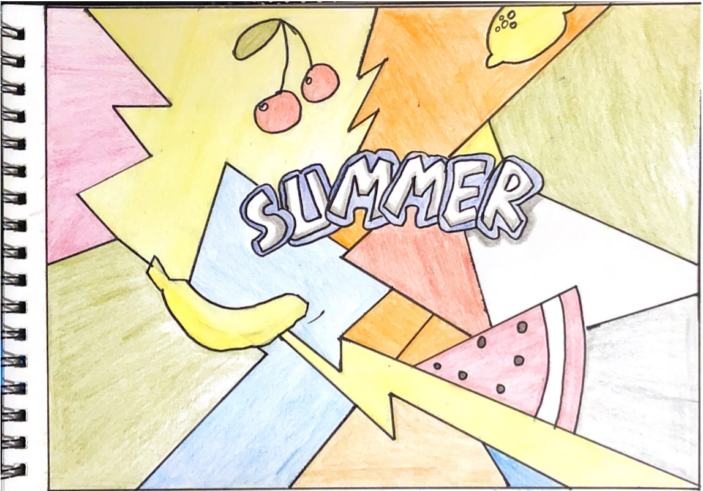

A Handmade Web
The term 'handmade' usually refers to objects made by hand or by using simple tools rather than machines. The result may be homely — as in a child's clay ashtray — or exquisite — as in a pair of bespoke brogues.

Back to home